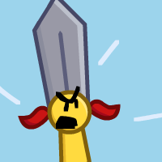

Sword
Gender: nonbinary
Pronouns: they/them
Age: 22
Purple: no
Sword! The non-binary one! A follower of Judaism, they're one of the few religious contestants of Toilet Paper. Surprisingly, they've never actually read the Torah and ambiguously plan to. Prone to anger, they don't really have any established friends. Just… acquaintances.
Voiced by: Brittany